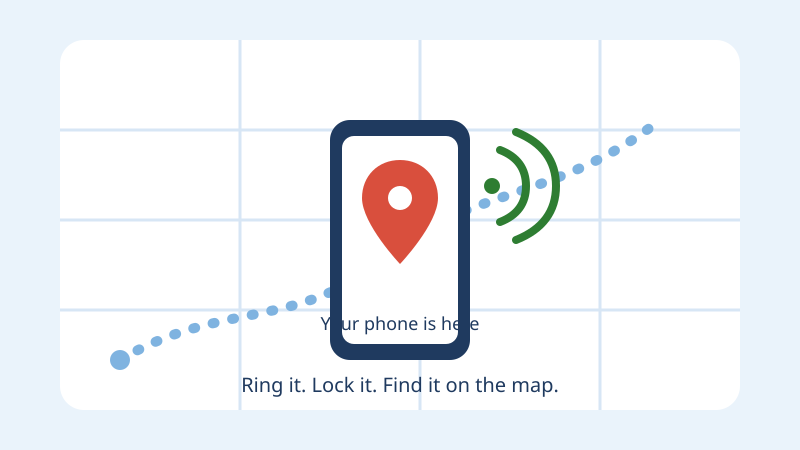

How to Find a Lost Samsung Galaxy Phone (Samsung Find / Find My Mobile)
Yusuf is 74 years old. One Tuesday afternoon, he took a taxi to the market, bought vegetables, and came home. When he sat down for tea, he patted his pocket. His phone was not there. His heart started beating fast. He searched everywhere. Nothing.
His son Imran came over. He did not panic. He picked up his own phone, opened a website, and signed in. On the screen, a small map appeared, with a dot on it. "Look, father," Imran said. "Your phone is at the market, near the vegetable stalls." Imran tapped a button, and the phone at the market started ringing loudly, even though Yusuf had put it on silent. The shopkeeper heard it, picked it up, and answered. An hour later, Yusuf had his phone back.
That is what this guide shows you. Samsung Galaxy phones have a built-in tool that helps you find a lost phone. On newer phones it is called Samsung Find, and on older phones it is called Find My Mobile. The idea is the same. If you set it up today, while your phone is safe in your hand, you can find it tomorrow if it is lost.

What finding your phone means
Think of it like a small bell tied to your phone. Normally, you cannot see the bell. But if the phone is lost, you can ring the bell from another phone or a computer, and the lost phone will answer back. It will tell you where it is, on a map, and it will ring loudly so you can hear it. But remember: it only works if you set it up before the phone is lost, and the phone must be switched on and online for a live location.
Before you lose it — set it up today
Do this now, while your phone is in your hand and you are calm. It takes about five minutes, and you only need to do it once. Ask a family member to sit with you if you like. Here are the steps.
- Sign in to your Samsung account. Your Samsung account is the account you made when you first set up the phone, with an email address and a password. Open Settings, and look at the very top of the screen. You should see your name, or your email address. If you see it, you are signed in. If you see a button that says "Sign in", tap it, and sign in with your email and password.
- Write the password on paper, and keep it at home. This is the most important step in this whole guide. When your phone is lost, you will need your Samsung account password to find it, and you will be signing in from someone else's phone or computer. If the password is only in your head, and you forget it in a panic, the tool cannot help you. Write the email address and the password on a piece of paper, and keep it in a drawer at home, where only your family can find it. Never carry that paper in your pocket, and never send the password to anyone in a message.
- Turn on Find My Mobile, or Samsung Find. In Settings, use the search box at the top and type "Find". Look for a result that says something like "Find My Mobile" or "Samsung Find". Tap it. You should see a switch. Make sure the switch is on. If it is off, tap it once to turn it on. On some phones, the setting lives under "Security and privacy" or under "Biometrics and security", but the search box is the easiest way to find it.
- Turn on "Send last location". On the same screen, look for a choice that says something like "Send last location" or "Send last known location". Turn that switch on too. It means that when your battery is almost empty, the phone will send one last message with its location, before it switches off. That last message can be the difference between finding the phone and losing it.
- Turn on "Offline finding" if you see it. On the same screen, there may be a choice called "Offline finding" or "Allow this phone to be found". Turn it on. It means other Galaxy phones nearby can quietly help find your phone, even if your phone has no internet of its own. It costs you nothing, and it only helps.
- Turn on Location. The phone needs to know where it is, to tell you where it is. Swipe down from the top of the screen with two fingers, to open the quick settings panel. Look for a button that says "Location". Make sure it is switched on. If it is off, tap it once. Location must be on for the map to work. Read How to Control Which Apps Can Use Your Camera, Microphone and Location if you want to understand location settings more.
- Do a quick test. Ask a family member to hide your phone in another room. Then open the Find tool on their phone or on a computer, sign in with your Samsung account, and see if your phone appears on the map. Tap "Ring" and listen. If the phone rings, the setup works, and you are ready. If it does not appear, go back through steps 1 to 6, slowly, and check every switch again.
That is the whole setup. One more habit helps: keep your phone charged. A phone with a dead battery cannot send its location. Read How to Make Your Phone Battery Last Longer if your battery runs out often. And remember: if you use a family member's Galaxy phone to find yours, sign in with your account, not theirs, and sign out when you are done, so your account does not stay on their phone.
How to find your phone from another device
Now imagine the bad day has come. The phone is lost. Stay calm, and work through these steps slowly. You will need another device — a family member's phone, a tablet, or a computer — and the piece of paper at home with your Samsung account email and password on it.
- Borrow a phone or a computer. Ask someone in your family, or a neighbour you trust. You only need it for a few minutes. You are not giving them your password — you will type it in yourself, and sign out when you are done.
- Open the Samsung Find website. On the borrowed device, open the internet browser — the app you use to look at websites. In the address bar at the top, type smartthingsfind.samsung.com, or search for "Samsung Find". If the phone is older, search for "Find My Mobile Samsung" instead.
- Sign in with your Samsung account. Type the email address and the password from your piece of paper. Take your time. If the password does not work the first time, check the paper again, slowly, letter by letter. Passwords care about big and small letters, so "Apple" and "apple" are different.
- Pick your phone. After you sign in, you should see a list of your devices. If you have only one Galaxy phone, you will see one. Tap it, or click on it. If you also have a tablet or a watch, be careful to pick the phone, not the tablet.
- Look at the map. After a few seconds, a map should appear, with a dot on it. That dot is where your phone was last heard from. If the dot is at the market, or at your friend's house, or in the taxi's area, you know where to look. Tap on the dot, or the address beside it, to see the street name.
- Tap "Ring". If the map says the phone is near you — in the house, in the car, or in the shop where you just were — tap the button that says "Ring". The phone will ring loudly for a few minutes, even if it is on silent or vibrate. Walk slowly around and listen.
- Stay signed in until the phone is back. Do not sign out, and do not close the browser, until you have the phone in your hand again. If the phone moves, the dot on the map should move too.
What the map shows — and what it does not
The map is helpful, but it is not magic. It is important to know what it can and cannot tell you.
When the phone is switched on and connected to the internet, the dot on the map is usually close to the real place — often within a few steps, or within one building. In a busy street, it may show the right shop. In a block of flats, it will show the building, but not which flat. That is normal.
When the phone is indoors, or under a roof, the dot may be a little off, sometimes by a whole street. That is because the phone guesses its place from nearby Wi-Fi and mobile towers when it cannot see the sky. Do not trust the dot to the last step. Use it to get to the right area, then use your ears and the Ring button. Under the map, you will often see the words "last updated" with a time, like "last updated 5 minutes ago". That time matters. If it says "2 minutes ago", the phone is still awake and talking, and the dot is fresh. If it says "3 hours ago", the phone has been quiet for three hours, and the dot is the last place it was, before it went quiet. Go there first.
Ring your phone, even on silent
The Ring button is the most useful button in the whole tool, and many people do not know it works even when the phone is on silent. Here is what it does.
When you tap "Ring", the lost phone plays a loud ringing sound, at full volume, for a few minutes. It does this even if you put the phone on silent or vibrate earlier. It is designed this way on purpose, so you can hear a phone that is hiding under a cushion or inside a bag.
Use it like this. First, check the map and go to the place. Then tap "Ring" and stand still and listen. Ask the people around you to be quiet. The sound will come from one direction. Walk towards it, slowly, and tap "Ring" again if it stops. If you hear it in a shop or a taxi, tell the person there, politely, that it is your phone ringing, and ask them to hand it to you. Most people are happy to help. If you hear nothing at all, the phone may be in a bag, under clothes, or in a noisy street — try again in a few minutes, from a different place. And if the phone is switched off, it cannot ring at all — read the section "If the phone is switched off or has no internet" below.
Lock it and show a message on the screen
If you cannot reach the phone right away, protect it. The Find tool lets you lock the phone from far away, and put a message on its screen, so that whoever finds it knows how to reach you.
On the Find website, after you pick your phone, look for a button that says "Lock" or "Lock device". Tap it. The phone will lock at once, with your PIN or password, so nobody can open it and look at your photos or messages. If you had no screen lock before, the tool will ask you to set a new PIN — pick one you will remember, and write it on the piece of paper at home.
After you lock it, write a short message and a phone number in the box on the screen. The message appears on the lost phone's lock screen, so a finder can read it without unlocking the phone. Write something simple, like: "This phone is lost. Please call 03xx-xxxxxxx. Thank you." Use a number you can answer — your home phone, or a family member's phone. Do not write your home address, your bank details, or your password in it. Locking does not delete anything — your photos and messages stay safe behind the lock until you get the phone back. Locking is not the same as erasing, which is only a last step, explained below in "If it is truly stolen".
If the phone is switched off or has no internet
Sometimes the map shows nothing new, and the Ring button does nothing. That usually means the phone is switched off, the battery is dead, or it has no internet. Here is what to do.
First, check the "last updated" time under the map. If it is recent, the phone was awake a short time ago, and the dot is fresh. Go to that place and look. If it is old — hours ago — the phone went quiet there, and the dot is the last place it was before it went quiet. Go to that place first. And keep checking: the moment someone switches the phone on, or charges it, it will talk again, and the dot will move. So check the Find website again in an hour, and again in the evening.
Third, use the "Send last location" switch you turned on in the setup. If you turned it on, the phone sent one last location message when its battery was almost empty. That message is the dot you see. It is the best clue you have, so trust it, and go there. You can also call your own number from another phone. If the phone is switched on, it may ring, even if nobody answers. If it goes straight to voicemail, or says "switched off", the phone is off — try again later.
If it is truly stolen — do not chase it yourself
Sometimes the dot moves, and it is clearly not where you left it. Or the phone rings once, and then goes silent. Or someone answers your call and asks for money. Then the phone may be stolen. Here is what to do, and what not to do.
Do not go after it yourself. Do not go to a strange address alone, and do not meet a stranger who says they have your phone. Your safety is worth more than any phone. Tell the police, and tell your family. Give the police the last location from the map and the phone's model and colour.
Lock the phone from the Find website at once, so nobody can open it. Then, only if the police agree that the phone is gone for good, you can erase it from the same website. The button says something like "Erase data" or "Factory reset". Erasing deletes your photos, contacts and messages from the phone, so a thief cannot see them. But erasing also stops the Find tool from working. So erase only as the very last step, when you are sure the phone is not coming back.
After that, tell your mobile company that the phone is lost or stolen, so they can block the SIM card. Then nobody can use your number to call people, or to get codes sent to your phone. Your mobile company may also be able to block the phone itself, so it cannot be used on any network. Ask them — it is a normal request, and they hear it every day. And one warning: if someone calls you and says "I found your phone, send me money first", do not send money. That is a scam. A real finder will meet you in a public place, or hand the phone to the police, or to a shop. Read How to Spot a Scam Call or Message if you get a strange call like that. If you are unsure, hang up, and call the police or a family member.
Practise with Yusuf
Let us practise with Yusuf. He sits at the kitchen table with Imran, and they do the setup together: Yusuf is signed in, the password is on paper in the drawer, and "Find My Mobile", "Send last location", and "Offline finding" are all switched on. Then they test it. Imran takes Yusuf's phone into the garden and puts it under a cushion. Yusuf stays in the kitchen with Imran's phone. Imran opens the Samsung Find website, signs in, and picks Yusuf's phone. A map appears, with a dot on the house. Imran taps "Ring". From the garden, a loud ringing sound comes through the window. Yusuf laughs. "There it is," he says. "Now I know it works." Now try it yourself, with a family member. Do the setup today, and do the test today. It takes ten minutes. Then, if the bad day ever comes, you will not be learning a new tool in a panic.
Common mistakes
- Never setting it up before the phone is lost. The Find tool cannot help a phone that was never switched on for it. Set it up today, while the phone is in your hand.
- Forgetting the Samsung account password. If you cannot sign in, you cannot find the phone. Write the email and the password on paper, and keep it at home.
- Turning Location off to save battery. Location must be on for the map to work. Turning it off leaves you blind when the phone is lost.
- Trusting the dot to the last step. The map shows the building, not the exact seat. Use it to reach the right area, then use the Ring button and your ears.
- Going after a stolen phone alone. A phone is not worth your safety. Tell the police, and tell your family, and let them handle it.
- Erasing the phone too soon. Erasing deletes everything and stops the Find tool from working. Lock it first. Erase only as the very last step, when you are sure it is gone.
- Sending money to someone who says they found it. That is a common scam. A real finder meets you in a public place, or hands the phone to the police. Never pay first.
Frequently asked questions
Does Find My Mobile cost money?
No. Samsung Find and Find My Mobile are free, built into your Galaxy phone. You only need your Samsung account, which is also free. Nobody should ask you to pay to find your phone.
Can I find my phone if it is switched off?
Not live, no. A switched-off phone cannot send its location or ring. But you will still see the last place it was, before it switched off, and if someone switches it on again, the dot will appear.
Can I find my phone if I never signed in to a Samsung account?
No, not with this tool. It needs your Samsung account to know the phone is yours. If you never signed in, sign in today, and turn the tool on. It only takes a few minutes, and it only works from now on — it cannot find a phone that was already lost.
What if the phone is on silent? Will it still ring?
Yes. The Ring button makes the phone ring loudly at full volume, even if it is on silent or vibrate. That is the whole point of the button.
Will the finder see my photos and messages?
Not if you lock the phone from the Find website. Locking puts your PIN on the screen, so nobody can open it. They can only see the short message you wrote, with the phone number to call you back.
If the words on your screen look different
Menu words may look a little different on your phone. That is normal. Samsung makes many Galaxy models — A-series and S-series — and they do not all show the exact same words. Your phone company, called a carrier, can also change some words, and so can your country or region. And your One UI version matters. In November 2026, some phones use One UI 8, some use One UI 8.5, and some use One UI 9. That is why this guide tells you to search in Settings for "Find", and to look for "Find My Mobile", "Samsung Find", "Send last location", or "Offline finding", instead of one fixed set of words.
If you cannot find the setting at all, search in Settings for "Security and privacy" first, and look inside it for the Find setting. If it is still not there, ask a family member to check it with you, because the name may be different on your model.